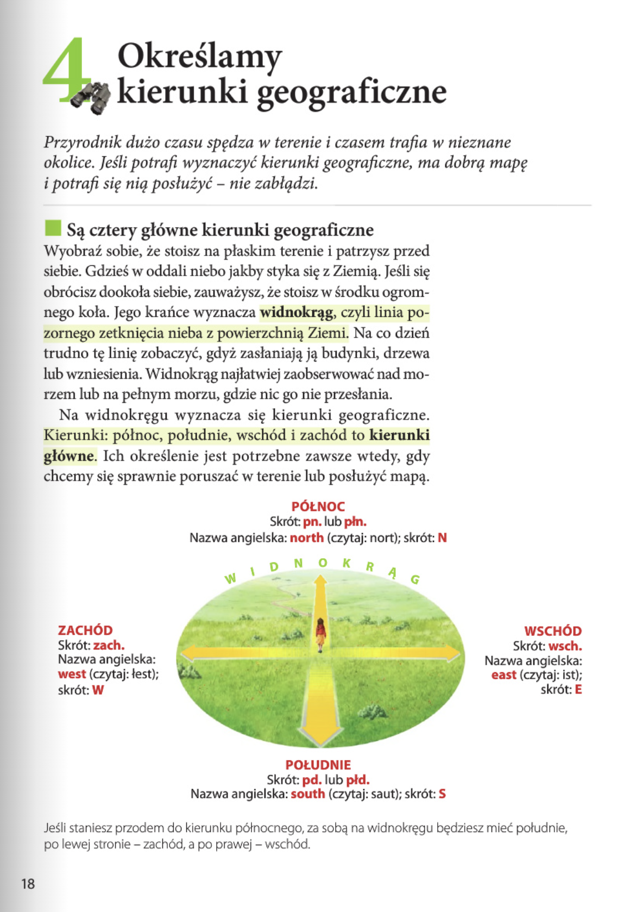
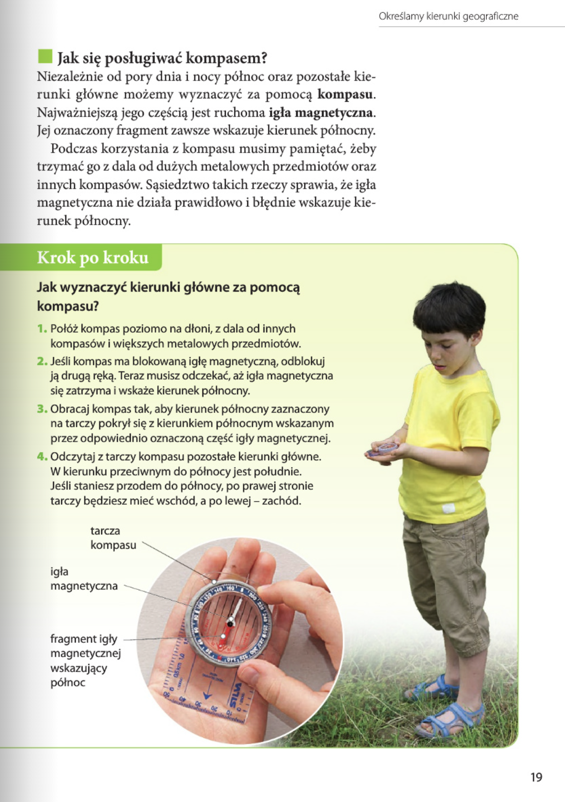
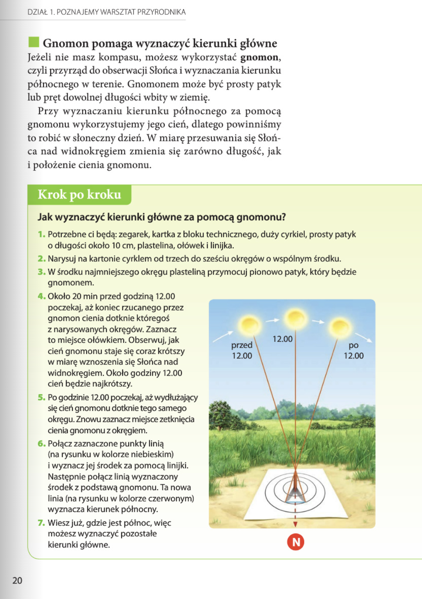
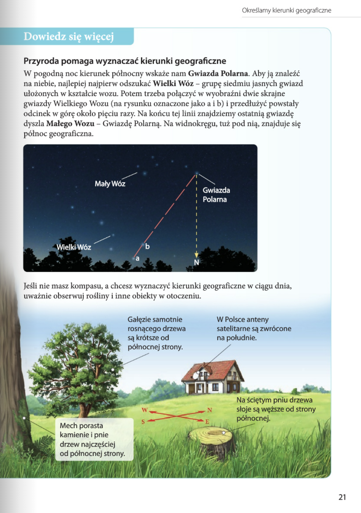
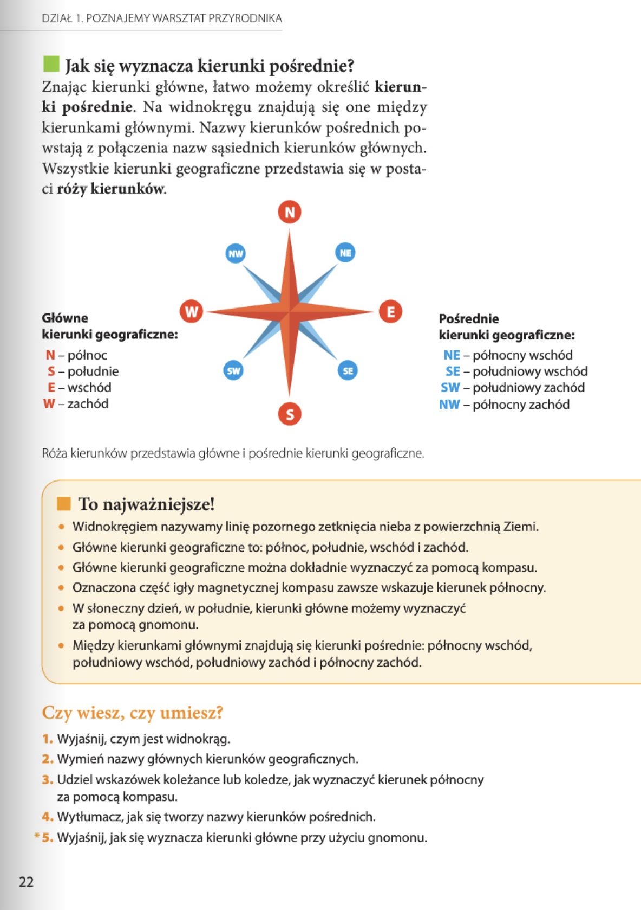

Przyroda
DZIAŁ 1. POZNAJEMY WARSZTAT PRZYRODNIKA: 8-33
Lekcja 4. Określamy kierunki geograficzne: 18

4. Określamy kierunki geograficzne
Wyobraź sobie, że stoisz na środku placu i chcesz pokazać drogę do czterech miejsc: na górę mapy, na dół, w prawo i w lewo. To właśnie cztery kierunki główne, które pomagają nam się orientować w terenie – czyli wiedzieć, gdzie jest co.
📍 Kierunki główne to:
- północ – na górze mapy (skrót: N od ang. north),
- południe – na dole mapy (S od south),
- wschód – po prawej stronie (E od east),
- zachód – po lewej stronie (W od west).
Między nimi znajdują się cztery kierunki pośrednie:
- północny wschód (NE – north-east),
- południowy wschód (SE – south-east),
- południowy zachód (SW – south-west),
- północny zachód (NW – north-west).
Jak się posługiwać kompasem?
Niezaleznie od pory dnia i nocy północ oraz pozostałe kierunki główne możemy wyznaczyć za pomocą kompasu.Najwazniejszą jego częścią jest ruchoma igła magnetyczna. Jej oznaczony fragment zawsze wskazuje kierunek północny.
Podczas korzystania z kompasu musimy pamiętać, żeby trzymać go z dala od dużych metalowych przedmiotów oraz innych kompasów. Sąsiedztwo takich rzeczy sprawia, że igła magnetyczna nie działa prawidłowo i błędnie wskazuje kierunek pólnocny.
Jak wyznaczyć kierunki główne za pomocą kompasu?
- Połóż kompas poziomo na dłoni, z dala od innych kompasów i większych metalowych przedmiotów.
- Jeśli kompas ma blokowaną igłę magnetyczną, odblokuj ją drugą ręką. Teraz musisz odczekać, aż igła magnetyczna się zatrzyma i wskaże kierunek północny.
- Obracaj kompas tak, aby kierunek północny zaznaczony na tarczy pokrył się z kierunkiem północnym wskazanym przez odpowiednio oznaczoną część igły magnetycznej.
- Odczytaj z tarczy kompasu pozostate kierunki główne. W kierunku przeciwnym do północy jest południe. Jeśli staniesz przodem do północy, po prawej stronie tarczy bedziesz miec wschód, a po lewej - zachód.


Gnomon pomaga wyznaczyć kierunki główne
Jeżeli nie masz kompasu, możesz wykorzystać gnomon, czyli przyrząd do obserwacji Słońca i wyznaczania kierunku północnego w terenie. Gnomonem może być prosty patyk lub pręt dowolnej długości wbity w ziemię.
Przy wyznaczaniu kierunku północnego za pomocą gnomonu wykorzystujemy jego cień, dlatego powinniśmy to robić w słoneczny dzień. W miarę przesuwania się Słońca nad widnokręgiem zmienia się zarówno długość, jak i położenie cienia gnomonu.
Jak wyznaczyć kierunki główne za pomocą gnomonu?
- Potrzebne ci będą: zegarek, kartka z bloku technicznego, duży cyrkiel, prosty patyk o długości około 10 cm, plastelina, ołówek i linijka.
- Narysuj na kartonie cyrklem od trzech do sześciu okręgów o wspólnym środku.
- W środku najmniejszego okręgu plasteliną przymocuj pionowo patyk, który będzie gnomonem.
- Około 20 min przed godziną 12.00 poczekaj, aż koniec rzucanego przez gnomon cienia dotknie któregoś z narysowanych okręgów. Zaznacz to miejsce ołówkiem. Obserwuj, jak cień gnomonu staje się coraz krótszy w miarę wznoszenia się Słońca nad widnokręgiem. Około godziny 12.00 cień będzie najkrótszy.
- Po godzinie 12.00 poczekaj, aż wydtuzajacy się cień gnomonu dotknie tego samego okręgu. Znowu zaznacz miejsce zetknięcia cienia gnomonu z okręgiem.
- Połącz zaznaczone punkty linią (na rysunku w kolorze niebieskim) i wyznacz jej środek za pomocą linijki. Następnie połącz linią wyznaczony środek z podstawą gnomonu. Ta nowa linia (na rysunku w kolorze czerwonym) wyznacza kierunek północny.
- Wiesz już, gdzie jest północ, wiẹc możesz wyznaczyć pozostałe kierunki główne.
Dowiedz sie wiecej
Przyroda pomaga wyznaczać kierunki geograficzne
W pogodną noc kierunek północny wskaże nam Gwiazda Polarna. Aby ja znaleźć na niebie, najlepiej najpierw odszukać Wielki Wóz - grupę siedmiu jasnych gwiazd ułożonych w kształcie wozu. Potem trzeba połączyć w wyobraźni dwie skrajne gwiazdy Wielkiego Wozu (na rysunku oznaczone jako a i b) i przedłużyć powstały odcinek w górę około pięciu razy. Na końcu tej linii znajdziemy ostatnią gwiazdę dyszla Małego Wozu - Gwiazdę Polarną. Na widnokręgu, tuż pod nią, znajduje się północ geograficzna.
Jeśli nie masz kompasu, a chcesz wyznaczyć kierunki geograficzne w ciągu dnia, uważnie obserwuj rośliny i inne obiekty w otoczeniu.
- Gałęzie samotnie rosnącego drzewa są krótsze od północnej strony.
- W Polsce anteny satelitarne są zwrócone na południe.
- Mech porasta kamienie i pnie drzew najczęściej od północnej strony.
- Na ściętym pniu drzewa słoje są węższe od strony północnej.


To najważniejsze!
- Widnokręgiem nazywamy linię pozornego zetknięcia nieba z powierzchnią Ziemi.
- Główne kierunki geograficzne to: północ, południe, wschód i zachód.
- Główne kierunki geograficzne można dokładnie wyznaczyć za pomocą kompasu.
- Oznaczona część igły magnetycznej kompasu zawsze wskazuje kierunek północny.
- W słoneczny dzień, w południe, kierunki główne możemy wyznaczyć za pomocą gnomonu.
- Między kierunkami głównymi znajdują się kierunki pośrednie: północny wschód, południowy wschód, południowy zachód i północny zachód.